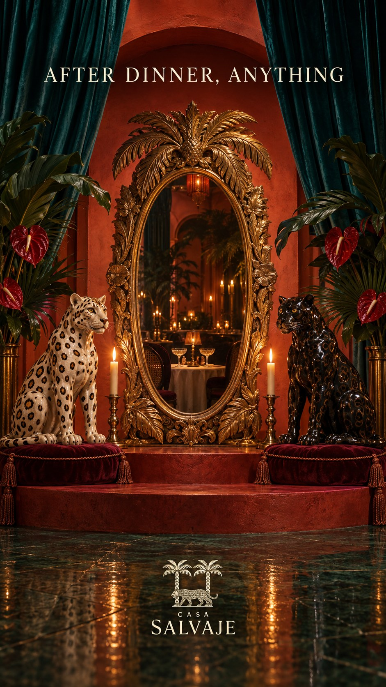

Dinner and dancing in Cartagena without changing venues
At dinner, behave. After dinner, anything. Here's how a night at SLVJ works.
Leer en español →
A night out in Cartagena usually comes in two parts: dinner and whatever follows. Normally that means settling the bill, hailing a taxi and hoping the next place has room. At SLVJ both parts happen in the same room.
First, the feast
SLVJ opens for dinner at 7 pm. Stone, velvet and amber light; a sushi bar to open the night. It's a long dinner, the kind that takes its time. See the SLVJ menu.
Then, the club
Thursday to Saturday, once dinner winds down, the room lights up. The music rises on a Funktion-One sound system and the club runs until 3 am. No need to move: your dinner table becomes the starting point of the night.
Monday to Saturday: 12–3 pm and 7 pm–12 am. Thursday to Saturday, club until 3 am. Sunday: 11 am–7 pm, or until 12 am when Monday is a public holiday. Check the live status in opening hours.
How to book
- For dinner: book your table online or on WhatsApp.
- For the club: ask for a club table; Thursday to Saturday it's the way to secure your spot when the room fills.
- Special dates: Halloween, omakase and limited-seat parties are announced first to the guest list.
Before dinner, Kanibal
If you arrive early, Kanibal, in the same house, serves Monday to Saturday from noon to midnight. A drink by the fire before the feast is a good way to begin.